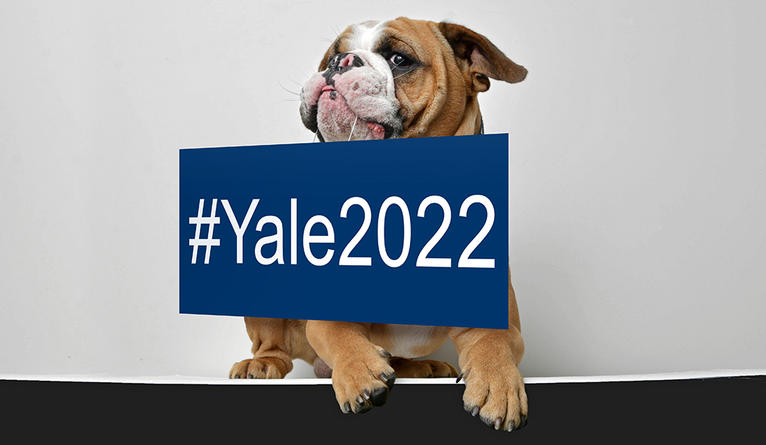

Yale College admits 2,229 students; second year of expanded class size
Students admitted to the Class of 2022 were chosen from among 35,306 applications, and represent all 50 states, Washington D.C., Puerto Rico, and 64 countries.

Yale College admits 2,229 students; second year of expanded class size
Students admitted to the Class of 2022 were chosen from among 35,306 applications, and represent all 50 states, Washington D.C., Puerto Rico, and 64 countries. |
||
The Yale Farm The Yale Farm produces dozens of varieties of vegetables, fruits, herbs, and flowers, and is home to free-range laying hens and honeybees. |